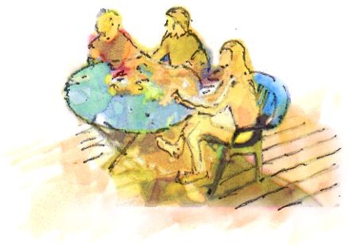

Figure 3.5 Exercise Nineteen. Discovering a Rendering Style with Entourage

Exercise Nineteen has several steps and intermediate deadlines. The final drawing will be a rendered exterior perspective of the project scene with people and a table suitable for an exterior perspective drawn in a future project. This first drawing will give us a chance to develop some actors for our scene and to explore our rendering style. The goal of the two exercises (Exercise Nineteen and Exercise Twenty ) is to build up a watercolor-inspired illustration of our project.
This assignment module contributes to the following design learning outcomes, which finish the sentence “As a successful student in this course, I am now able…”
… to use mixed media to illustrate the overall design.
Watercolor has historically been a common architectural illustration medium. Goauche, an opaque verion of watercolor, was also common for illustrators. The significant majority of architectural presentation drawings and illustrations are made in a digital format. There are several very different methods for digital illustration, and there is significant overlap between these methods. The predominant two architectural illustration formats are computer rendering (e.g., path-tracing, ray-tracing, etc.) and digital painting (e.g., Photoshop, ProCreate, GIMP, etc.) We experiment with both modalities over the course of this book. For the moment we will focus on digital painting and collage and discuss how this can be combined with computer rendering yielding impressive results.
Digital painting and collage techniques borrow an aesthetic from traditional watercolor, goauche and other fluid medium traditions. When searching for online videos about architectural illustration, perusing student digital architectural portfolios or searching professional rendering firm catalogues, it is evident that the fluidity and abstraction available through applying traditional fluid medium techniques offers many advantages over computer rendering. Some of these include savings in resources of both time and expense (e.g., expensive computers dedicated solely to rendering, cloud-based rendering, etc.), abundance of reference images for emulation, abstraction attuned to the level of design, acceptance and enthusiasm of client response, and relative immediacy of brush emulations in digital painting software.
You will benefit greatly from this step of searching for a reference image, because you will analyze the values, edges, textures, colors and composition, and synthesize these discoveries into your own style. Wholesale invention is not encouraged here for the beginning student, rather it can be helpful to experiment with techniques that you can infer from masterful images. Copying is likewise not encouraged. The middle ground is to discover your own “style” through experimentation. In this exercise we start by collecting a photograph from balcony-level view of several people at a cafe table. We will manipulate this file by bit-crushing its resolution and fidelity (e.g., blurring, adding noise, texture, etc.), remapping the color-grading and adding saturation and transparency to each layer grouping in the digital image file. The goal is to create your rendering style that is loose, flowing, abstracted and exciting by working at this small scale. Ultimately, you will take these learned lessons and your new found rendering style and apply it to a repainting of a computer model output that will include your entourage (i.e., people and cafe table) on the deck of your design for a Workshop in the Woods.
Many may say that the future is solely the domain of a computer rendering output. Others may say that the traditional painterly ways are the most beautiful and appropriate. We will say to them, “Why should I choose, when I can do both, and at the same time with beautiful outcomes?”
In order to get started it can be helpful to search for reference images that you consider artistically successful. To get you started let’s name a few rich resources to begin your search. * Google search engine -> select “Image” tab * Pinterest, Issuu, Instagram, Architizer, etc. * Watercolor Artists - Thomas W. Schaller - Joseph Zbukvic - Alex Hillkurtz - Moh’d Bilbeisi * Architectural Illustration - Visualizing Architecture by Alex Hogrefe - Jim Leggitt - Robert Becker
| DLO | Advanced (4 pts) | Proficient (3 pts) | Developing (2 pts) | Beginner (1 pt) | |
|---|---|---|---|---|---|
| Craft | Illustrator demonstrates exemplary attention to work product and excellence. | Illustrator demonstrates good attention and care towards work product. | Illustrator completes work, but the product seems rushed to completion. | Illustrator demonstrates attention towards work product, but work quality is | |
| Rendering | Illustrator uses tone value to represent the interplay of light on volumetric forms. Image is controlled and evokes both power and subtlety. Image is descriptive and/or symbolic and supports compositional goals. | Illustrator's tone value work demonstrates several professional attributes. Rendering style does not distract the viewer and generally supports compositional objectives. | Illustrator's use of tone value is somewhat effective. Rendering style is consistent and competent. There are some non-contributing attributes. | Illustrator attempts to use tone value descriptively. Rendering is inconsistent and lacks attention to craft. | |
| Technical | Modeler observes and analyzes object data and translates it to a meaningful electronic model representation. Professional conventions are followed, inclusive of view selection, accurate translation of field notes and light source selection | Modeler observes and analyzes object data and translates it to a meaningful electronic model. Most professional conventions are followed, and some information is missing. | Modeler is challenged to observe and analyze field sketch correctly in the electronic model. Few professional conventions are followed, and some information is missing. | Modeler attempts to observe and analyze field sketch and representation is inconsistent. Professional drawing conventions are not followed. | |
| Professionalism | Student completes the work on time. Work demonstrates exemplary attention to learning objectives. | Student completes the work on time and demonstrates a good work ethic. | Student generally completes the work at a minimum level of expectation. | Student is missing parts of the work and makes a plan for completion of the remaining assignment. |